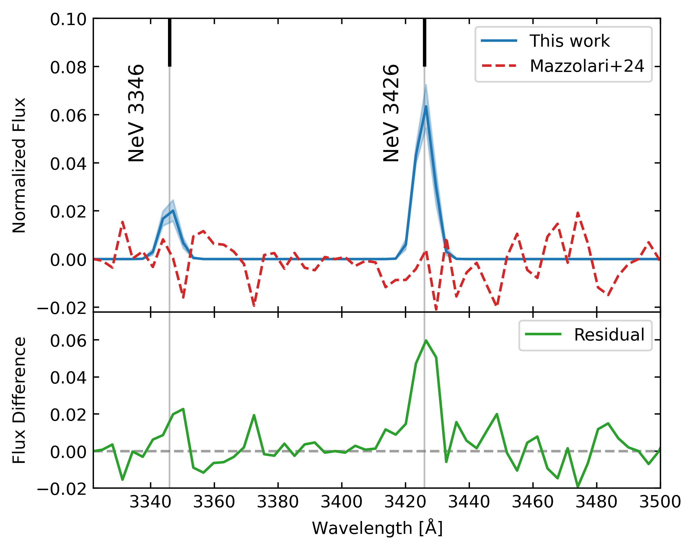
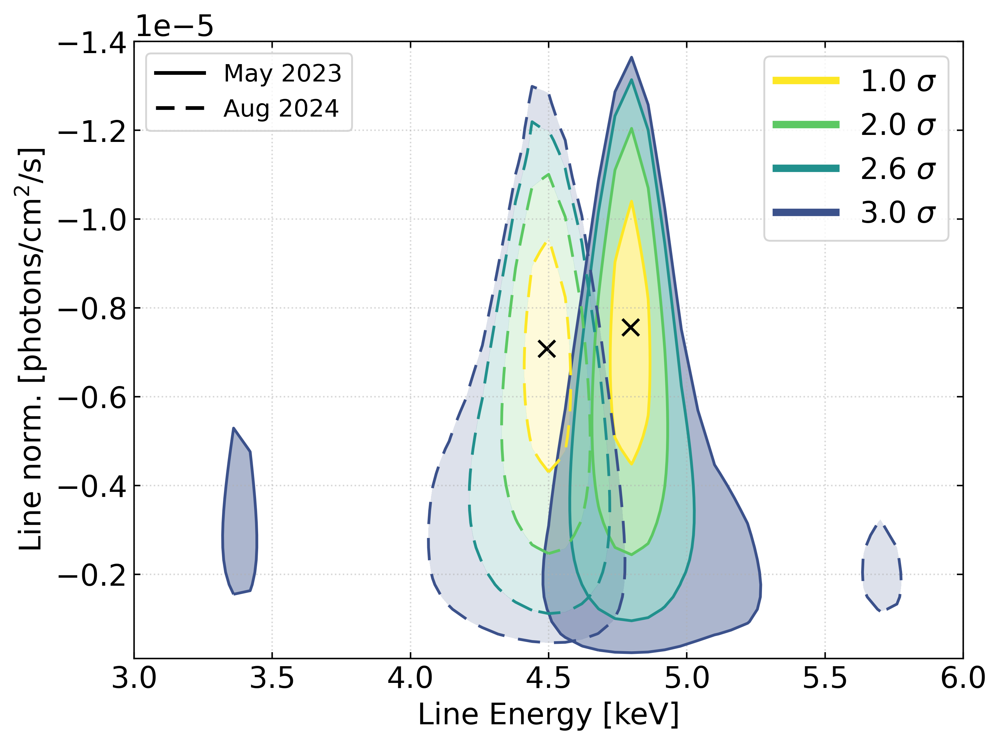
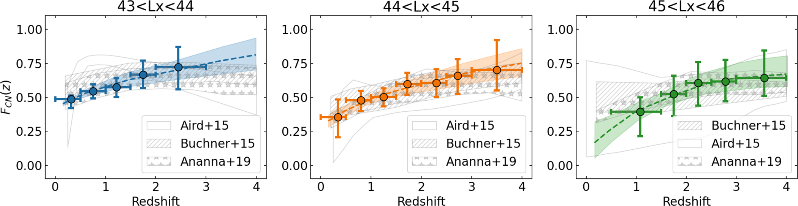
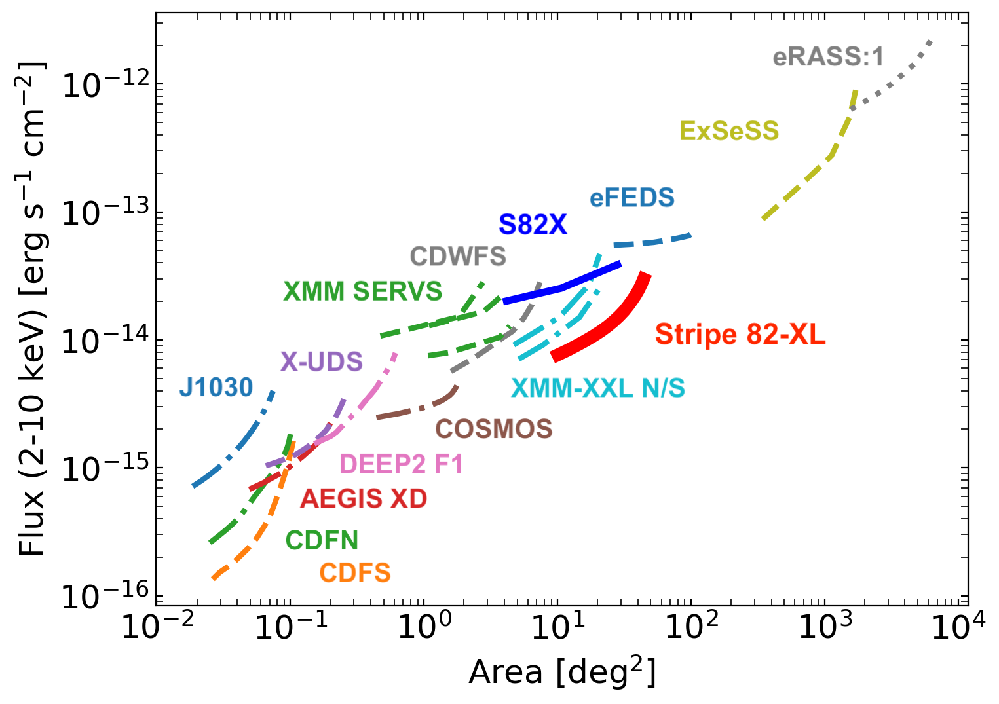
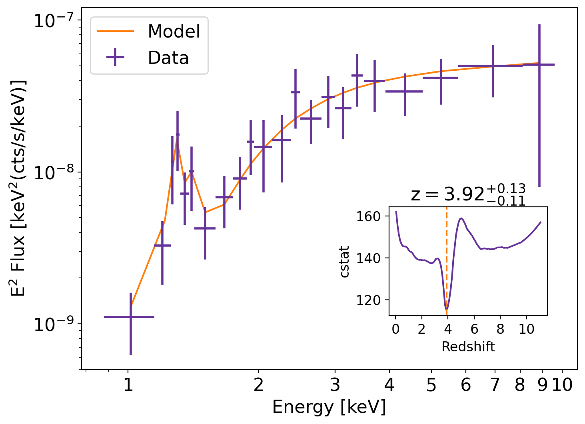
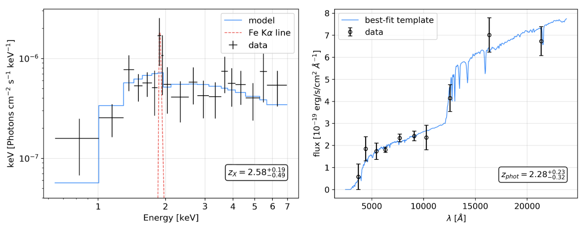

About Me
Hello there! I’m Alessandro, a FONDECYT Postdoctoral Fellow at Universidad Diego Portales in Santiago, Chile. I specialize in the study and evolution of active galactic nuclei (AGN) across various large-area surveys. My work involves several key projects focused on high-luminosity, heavily obscured AGN, both at high redshifts and in nearby galaxies. My expertise spans X-ray spectral/photometric analysis, AGN/galaxy SED fitting, multi-wavelength AGN counterpart matching, and the management of large catalogs and databases. I also have a deep love for statistics, which plays a crucial role in my research.
We are building the AGN Database (AGN-DB), a project from the AHA group with aiming to become the largest repository of known AGN across all redshifts and wavelengths. It's still a work in progress — see the AGN-DB card in the Research section below for more details.
Collaborators and referees: preview materials for an upcoming submission (password required).
Research
Explore my main research projects focused on active galactic nuclei (AGN) studies across various surveys and methodologies.
BASS High-L and obscured AGN in comparison with high-z Universe
We studied 21 of the most luminous and obscured AGN in the BASS survey. Our spectral analysis revealed that around half of them may experience intense activity, with radiation from the central black hole likely clearing out the obscuring material. Moreover, we compared our results with high-z obscured AGN, finding discrepancies in [NeV]λ3426 emission, raising critical questions about the nature of these objects.

Ultra-Fast Inflows?
The detection of an absorption feature in two separate NuSTAR observations of the obscured AGN ESP 39607 suggests the presence of an ultra-fast inflow (UFI) with a velocity of 15–20% the speed of light. We explore the physical mechanisms behind this phenomenon, including failed winds and non-standard chaotic accretion models.

Stripe 82X Survey
We have conducted a population study of X-ray AGN up to high redshift in the Stripe 82X survey, where we characterized AGN properties. In particular, we traced the obscured AGN fraction and found that it increases with redshift across all luminosity regimes covered by our survey. We also constructed an X-ray luminosity function that remains valid at high luminosities and is publicly available for download (see below).

Our XLF Tools:
Stripe 82-XL Survey
Built from archival Chandra and XMM data, Stripe 82-XL increases the area and depth of its predecessor, making an important contribution to X-ray surveys towards lower fluxes and larger area.

X-ray Redshift for AXIS Probe
We applied the method of Peca et al. (2021) to estimate reliable redshifts using X-ray spectra from the AXIS probe, focusing on obscured AGN in the planned surveys.

AGN Database (AGN-DB)
The AGN-Database aims to be the largest repository of all discovered AGN, at all redshifts and wavelengths (radio to X-rays).
J1030 Chandra Deep Field
Developed a method to derive reliable redshift estimates for obscured AGN using X-ray spectra alone, applicable to deep X-ray surveys. The method is particularly useful when spectroscopic and photometric redshift are not available and/or well constrained.

Publications
First Author Papers [link]
- BASS. XLIX. Characterization of Highly Luminous and Obscured AGNs: Local X-Ray and [Ne V]λ3426 Emission in Comparison with the High-redshift Universe by Peca, Alessandro, Koss, Michael J., Oh, Kyuseok, Ricci, Claudio, Trakhtenbrot, Benny, Mushotzky, Richard, Treister, Ezequiel, Urry, C. Megan, Pizzetti, Andrealuna, Ichikawa, Kohei, Tortosa, Alessia, Ricci, Federica, Signorini, Matilde, Kakkad, Darshan, Chang, Chin-Shin, Mazzolari, Giovanni, Caglar, Turgay, Magno, Macon, del Moral-Castro, Ignacio, Boorman, Peter G., Ananna, Tonima T., Harrison, Fiona, Stern, Daniel, Sanders, David (Sep 2025) - Citations: 8 - ADS Link
- NuSTAR Detection of an Absorption Feature in ESP 39607: Evidence for an Ultrafast Inflow? by Peca, Alessandro, Koss, Michael J., Serafinelli, Roberto, Ricci, Claudio, Urry, C. Megan, Cerini, Giulia, Boorman, Peter G. (Aug 2025) - Citations: 6 - ADS Link
- Stripe 82-XL: The ∼54.8 deg2 and ∼18.8 Ms Chandra and XMM-Newton Point-source Catalog and Number of Counts by Peca, Alessandro, Cappelluti, Nico, LaMassa, Stephanie, Urry, C. Megan, Moscetti, Massimo, Marchesi, Stefano, Sanders, David, Auge, Connor, Ghosh, Aritra, Ananna, Tonima Tasnim, Torres-Albà, Núria, Treister, Ezequiel (Oct 2024) - Citations: 13 - ADS Link
- X-ray Redshifts for Obscured Active Galactic Nuclei with AXIS Deep and Intermediate Surveys by Peca, Alessandro, Cappelluti, Nico, Marchesi, Stefano, Hodges-Kluck, Edmund, Foord, Adi (Jun 2024) - Citations: 4 - ADS Link
- On the Cosmic Evolution of AGN Obscuration and the X-Ray Luminosity Function: XMM-Newton and Chandra Spectral Analysis of the 31.3 deg2 Stripe 82X by Peca, Alessandro, Cappelluti, Nico, Urry, C. Megan, LaMassa, Stephanie, Marchesi, Stefano, Ananna, Tonima Tasnim, Baloković, Mislav, Sanders, David, Auge, Connor, Treister, Ezequiel, Powell, Meredith, Turner, Tracey Jane, Kirkpatrick, Allison, Tian, Chuan (Feb 2023) - Citations: 66 - ADS Link
- X-Ray Redshifts for Obscured AGN: A Case Study in the J1030 Deep Field by Peca, Alessandro, Vignali, Cristian, Gilli, Roberto, Mignoli, Marco, Nanni, Riccardo, Marchesi, Stefano, Bolzonella, Micol, Brusa, Marcella, Cappelluti, Nico, Comastri, Andrea, Lanzuisi, Giorgio, Vito, Fabio (Jan 2021) - Citations: 27 - ADS Link
Including Co-author Papers [link]
- VAR-PZnn: A machine-learning framework for AGN photometric redshifts using color and variability-based features by Satheesh-Sheeba, S., Sánchez-Sáez, P., Assef, R. J., Anguita, T., Shirley, R., Salvato, M., Arévalo, P., Ananna, T T., Bauer, F. E., Bornancini, C. G., Brandt, W. N., De Cicco, D., Espinoza-Ortiz, M., Fagin, J., Fatović, M., Graham, A. W., Guo, H., Hernandez-García, L., Ilić, D., Kovačević, A. B., Lira, P., Malz, A. I., Marculewicz, M., Marsango, D., Mazzucchelli, C., Mkrtchyan, T., Panda, S., Peca, A., Petrecca, V., Rani, B., Ricci, C., Richards, G. T., Riffel, R. A., Rojas-Lilayú, A., Saremi, E., Schneider, D. P., Sotomayor, B., Temple, M. J., Viitanen, A., Yoon, I., Yu, Z., Zou, F. (Jul 2026) - Citations: 0 - ADS Link
- No evolution in the number density of little red dots from cosmic dawn to cosmic noon by Loiacono, Federica, Gilli, Roberto, Mignoli, Marco, Brusa, Marcella, Calura, Francesco, Chiaberge, Marco, Comastri, Andrea, D'Amato, Quirino, Decarli, Roberto, Delvecchio, Ivan, Iwasawa, Kazushi, Juodžbalis, Ignas, Lanzuisi, Giorgio, Maiolino, Roberto, Marchesi, Stefano, Mazzolari, Giovanni, Norman, Colin, Peca, Alessandro, Prandoni, Isabella, Sapori, Matteo, Signorini, Matilde, Tozzi, Paolo, Vanzella, Eros, Vignali, Cristian, Vito, Fabio, Zamorani, Gianni, Zanella, Anita (Jun 2026) - Citations: 1 - ADS Link
- AGILE: An end-to-end Rubin-LSST simulation of active galactic nuclei, galaxies, and stars: I. Software description and first data release by Viitanen, A., Bongiorno, A., Saccheo, I., Grazian, A., Paolillo, M., Petrecca, V., De Cicco, D., Roberts, D., Shankar, F., Allevato, V., Merlin, E., Ilić, D., Kovačević, A. B., De Somma, G., Di Criscienzo, M., Girardi, L., Marconi, M., Mazzi, A., Pastorelli, G., Trabucchi, M., Ananna, T., Assef, R. J., Brandt, W. N., Brescia, M., Graham, A. W., Li, G., Marsango, D., Peca, A., Polioudakis, M., Raiteri, C. M., Rani, B., Ricci, C., Richards, G., Salvato, M., Satheesh-Sheeba, S., Shirley, R., Tang, S., Temple, M. J., Tombesi, F., Yoon, I., Zou, F. (May 2026) - Citations: 0 - ADS Link
- BASS: LV. Connecting X-ray variability with physical properties of active galactic nuclei and a new path to cosmological distances by Signorini, Matilde, Ricci, Federica, Tortosa, Alessia, Bianchi, Stefano, La Franca, Fabio, Bauer, Franz E., Harrison, Fiona A., Ichikawa, Kohei, Jana, Arghajit, Koss, Michael J., Liu, Tingting, Oh, Kyuseok, Peca, Alessandro, Powell, Meredith, Ricci, Claudio, Sanders, David B., Serafinelli, Roberto, Stern, Daniel, Trakhtenbrot, Benny, Treister, Ezequiel, Urry, Megan (May 2026) - Citations: 0 - ADS Link
- UGC 2369S: A Kiloparsec-scale Triple Merger Candidate Identified in a Nearby Luminous Infrared Galaxy by Ding, Yuanze, Koss, Michael J., Harrison, Fiona A., Steidel, Charles C., Auge, Connor, Gillette, Jared, Hammerstein, Erica, Li, Ruancun, Magno, Macon, del Moral-Castro, Ignacio, Peca, Alessandro, Ricci, Claudio, Song, Yiqing, Treister, Ezequiel, Zhuang, Zhuyun (May 2026) - Citations: 2 - ADS Link
- Resolved UV─Optical HST Imaging and Spectral Energy Distribution Modeling of Nearby BAT Active Galactic Nuclei by Auge, Connor, Koss, Michael, Gupta, Kriti K., Ricci, Claudio, Trakhtenbrot, Benny, Bauer, Franz E., Treister, Ezequiel, Peca, Alessandro, Cenko, Brad, Ichikawa, Kohei, Jana, Arghajit, Kakkad, Darshan, Mushotzky, Richard, Oh, Kyuseok, Rojas Lilayú, Alejandra, Sanders, David, Serafinelli, Roberto, Signorini, Matilde, Tortosa, Alessia, Urry, C. Megan (May 2026) - Citations: 0 - ADS Link
- VAR-PZ: Constraining the photometric redshifts of quasars using variability by Satheesh-Sheeba, S., Assef, R. J., Anguita, T., Sánchez-Sáez, P., Shirley, R., Ananna, T. T., Bauer, F. E., Bobrick, A., Bornancini, C. G., Bosman, S. E. I., Brandt, W. N., De Cicco, D., Czerny, B., Fatović, M., Ichikawa, K., Ilić, D., Kovačević, A. B., Li, G., Liao, M., Rojas-Lilayú, A., Marculewicz, M., Marsango, D., Mazzucchelli, C., Mkrtchyan, T., Panda, S., Peca, A., Rani, B., Ricci, C., Richards, G. T., Salvato, M., Schneider, D. P., Temple, M. J., Tombesi, F., Yu, W., Yoon, I., Zou, F. (Apr 2026) - Citations: 1 - ADS Link
- Predicting Quasar Counts Detectable in the LSST Survey by Li, Guodong, Assef, Roberto J., Brandt, W. N., Temple, Matthew J., Bauer, Franz E., Marculewicz, Marcin, Panda, Swayamtrupta, Peca, Alessandro, Ricci, Claudio, Richards, Gordon T., Satheesh-Sheeba, Sarath, Tsai, Chao-Wei, Wu, Jingwen, Yoon, Ilsang (Apr 2026) - Citations: 7 - ADS Link
- BASS: LI. Cool gas supply of HI-massive local Seyfert galaxies by Kim, Jeein, Chung, Aeree, Wong, Oiwei Ivy, Baek, Junhyun, Murugeshan, Chandrashekar, Koss, Michael J., Oh, Kyuseok, Bauer, Franz Erik, Chang, Chin-Shin, Diaz, Yaherlyn, Ichikawa, Kohei, Kakkad, Darshan, Kim, Minjin, Magno, Macon, del Moral-Castro, Ignacio, Mushotzky, Richard, Peca, Alessandro, Ricci, Claudio, Signorini, Matilde, Parra Tello, Miguel, Trakhtenbrot, Benny, Woo, Jong-Hak (Apr 2026) - Citations: 0 - ADS Link
- Obscured AGN at z < 1.5: X-Ray to Far-infrared SEDs and Host Galaxy Morphologies in the GOODS Fields by Jarvis, William W. H., Auge, Connor, Sanders, David, Ding, Xuheng, Kim-Bolt, Jeana, Urry, C. Megan, Hooper, Eric, Peca, Alessandro, Ghosh, Aritra, Tian, Chuan, Ananna, Tonima T., Mahmudunnobe, Md (Apr 2026) - Citations: 0 - ADS Link
- Probing Heavily Obscured Active Galactic Nuclei in Major Galaxy Mergers Using the Millimeter─X-Ray Correlation by Droguett-Callejas, Macarena, Treister, Ezequiel, Barcos-Muñoz, Loreto, Johnstone, Makoto, Bauer, Franz E., Kawamuro, Taiki, Torres-Albà, Núria, Ricci, Claudio, Koss, Michael, Song, Yiqing, Peca, Alessandro, Evans, Aaron, González, Jorge (Mar 2026) - Citations: 2 - ADS Link
- Radio selection of heavily obscured AGN in the J1030 field: unraveling a missing Compton-thick population by Mazzolari, Giovanni, Gilli, Roberto, Mignoli, Marco, Brusa, Marcella, Prandoni, Isabella, Vito, Fabio, Delvecchio, Ivan, Lanzuisi, Giorgio, Peca, Alessandro, Comastri, Andrea, Marchesi, Stefano, Chiaberge, Marco, Brienza, Marisa, Vignali, Cristian, Signorini, Matilde, D'Amato, Quirino, Gentile, Fabrizio, Iwasawa, Kazushi, Norman, Colin, Traina, Alberto, Loiacono, Federica, Baldini, Pietro, Annunziatella, Marianna, Decarli, Roberto (Mar 2026) - Citations: 6 - ADS Link
- Implications of Nonequatorial Relativistic Accretion Flows for Ultrafast Inflows in Active Galactic Nuclei by Fukumura, Keigo, Peca, Alessandro, Serafinelli, Roberto, Dadina, Mauro (Feb 2026) - Citations: 0 - ADS Link
- Accretion History of AGNs: A Multiwavelength Comparison of X-Ray- and Infrared-selected AGNs by Kelly, Thresa, Auge, Connor, Sanders, David, Kirkpatrick, Allison, Carroll, Christopher M., Urry, C. Megan, Cappelluti, Nico, Ananna, Tonima Tasnim, Baloković, Mislav, Boquien, Médéric, Coleman, Brandon, Hickox, Ryan, Kartaltepe, Jeyhan S., Koss, Michael, Marchesi, Stefano, Peca, Alessandro, Powell, Meredith, Treister, Ezequiel, Troiani, Greg, Turner, Tracey Jane, Weaver, Tristan (Feb 2026) - Citations: 0 - ADS Link
- BASS. LIV. Physical Properties of AGN-hosting Galaxy Mergers from Multiwavelength SED Fitting by Troncoso, Marco, Treister, Ezequiel, Rojas, Alejandra, Boquien, Médéric, Bauer, Franz, Koss, Michael J., Assef, Roberto J., Parra Tello, Miguel, del Moral-Castro, Ignacio, Ricci, Claudio, Dai, Sophia, Oh, Kyuseok, Ricci, Federica, Peca, Alessandro, Urry, C. Megan, Gupta, Kriti Kamal, Venturi, Giacomo, Signorini, Matilde, Mushotzky, Richard, Sanders, David (Dec 2025) - Citations: 3 - ADS Link
- The Advanced X-ray Imaging Satellite (AXIS) Community Science Book by Koss, Michael, Aftab, Nafisa, Allen, Steven W., Amato, Roberta, An, Hongjun, Andreoni, Igor, Anguita, Timo, Arcodia, Riccardo, Ayres, Thomas, Bachetti, Matteo, Baglio, Maria Cristina, Bahramian, Arash, Balboni, Marco, Baldi, Ranieri D., Balman, Solen, Bamba, Aya, Banados, Eduardo, Bao, Tong, Bartalucci, Iacopo, Basu-Zych, Antara, Batalha, Rebeca, Battistini, Lorenzo, Bauer, Franz Erik, Beardmore, Andy, Becker, Werner, Behar, Ehud, Belfiore, Andrea, Beniamini, Paz, Bertola, Elena, Bessa, Vinicius, Best, Henry, Bianchi, Stefano, Biava, N., Binder, Breanna A., Blanton, Elizabeth L., Bodaghee, Arash, Bogdanovic, Tamara, Bogensberger, David, Bonafede, A., Bonetti, Matteo, Bordas, Pol, Borghese, Alice, Botteon, Andrea, Boula, Stella, Bozzo, Enrico, Branchesi, Marica, Brandt, William Nielsen, Bregman, Joel, Brighenti, Fabrizio, Bronzini, Ettore, Brunelli, Giulia, Brusa, Marcella, Bulbul, Esra, Burdge, Kevin, Caccianiga, Alessandro, Calzadilla, Michael, Campana, Sergio, Capalbi, Milvia, Capitanio, Fiamma, Cappelluti, Nico, Carney, Jonathan, Casanova, Sabrina, Castro, Daniel, Cenko, S. Bradley, Chakraborty, Joheen, Chakraborty, Priyanka, Chartas, George, Chatterjee, Arka, Choudhury, Prakriti Pal, Cilley, Raven, Civano, Francesca, Comastri, Andrea, Connor, Thomas, Corcoran, Michael F., Corrales, Lia, Coti Zelati, Francesco, Cui, Weiguang, D'Ammando, Filippo, Dage, Kristen, Daylan, Tansu, De Grandi, Sabrina, De Rosa, Alessandra, Decarli, Roberto, Decourchelle, Anne, Degenaar, Nathalie, Del Popolo, Antonino, Di Marco, Alessandro, Di Salvo, Tiziana, Dichiara, Simone, DiKerby, Stephen, Dillmann, Steven, Doerksen, Neil, Draghis, Paul, Drake, Jeremy J., Ducci, Lorenzo, Dupke, Renato, Durbak, Joseph, Duvvuri, Girish M., Dykaar, Hannah, Eckert, Dominique, Elvis, Martin, Espaillat, Catherine, Esposito, Paolo, Furst, Felix, Fabbiano, Giuseppina, Fagin, Joshua, Falcone, Abraham, Fedorova, Elena, Feinstein, Adina, Fernandez Fernandez, Jorge, Ferrand, Gilles, Flores, Anthony M., Foo, N., Foo, Nicholas, Foord, Adi, Franchini, Alessia, Fraschetti, Federico, Frye, Brenda L., Lowenthal, James D., Fryer, Chris, Fujimoto, Shin-ichiro, Gagnon, Seth, Gallo, Luigi, Garcia Diaz, Carlos, Gaspari, Massimo, Gastaldello, Fabio, Gelfand, Joseph D., Gezari, Suvi, Ghizzardi, Simona, Giacintucci, Simona, Gill, A., Gilli, Roberto, Gitti, Myriam, Giustini, Margherita, Gnarini, Andrea, Grandi, Paola, Gross, Arran, Gu, Liyi, Gunderson, Sean, Gunther, Hans Moritz, Haggard, Daryl, Hamaguchi, Kenji, Hare, Jeremy, Harrington, Kevin C., Heinke, Craig, Heinz, Sebastian, Hlavacek-Larrondo, Julie, Ho, Wynn C. G., Hodges-Kluck, Edmund, Homan, Jeroen, Huang, R., Ighina, Luca, Ignesti, Alessandro, Imbrogno, Matteo, Irwin, Christopher, Irwin, Jimmy, Islam, Nazma, Israel, Gian Luca, Jacobson-Galan, Wynn, Jain, Chetana, Jana, Arghajit, Jaodand, Amruta, Jennings, Fred, Jiang, Jiachen, Jimenez-Andrade, Eric F., Jimenez-Teja, Y., Johnson, S., Jonker, Peter, Kamieneski, Patrick S., Kammoun, Elias, Kara, Erin, Kargaltsev, Oleg, King, George W., Kirmizibayrak, Demet, Klingler, Noel, Kong, Albert K. H., Kounkel, Marina, Kumar, Manish, Kutyrev, Alexander, Kyer, Rebecca, La Monaca, Fabio, Lambrides, Erini, Lanzuisi, Giorgio, Lee, Wonki, Lehmer, Bret, Lentini, Elisa, Lepore, Marika, Li, Jiangtao, Lisse, Carey M., Liu, Daizhong, Liu, Tingting, Isla Llave, Monica, Locatelli, Nicola, Lopez, Laura A., Lopez, Sebastian, Lovisari, Lorenzo, Lusso, Elisabeta, Mac Intyre, Brydyn, MacMaster, Austin, Maiolino, Roberto, Maithil, Jaya, Maitra, Chandreyee, Majid, Walid, Bjorn Malesani, Daniele, Malewicz, Julie, Mallick, Labani, Mandel, Shifra, Manousakis, Antonios, Mantz, Adam, Marchesi, Stefano, Markevitch, Maxim, Matsumoto, Tatsuya, Matthews, James, Mayer, Martin G. F., Mazzolari, Giovanni, Mazzucchelli, Chiara, McDonald, Michael, Meyer, Eileen T., Middei, Riccardo, Migliori, Giulia, Millon, Martin, Miniutti, Giovanni, Mirakhor, Mohammad, Molendi, Silvano, Monson, Erik B., Moretti, Alberto, Morgan, Christopher, Mori, Kaya, Morris, R. Glenn, Naik, Sachindra, Nair, Preethi, Nardini, Emanuele, Naze, Yael, Negro, Michela, Neira, Favio, Ng, Chi Yung, Ng, Mason, Nguyen, Thong T. Q., Noble, Scott C., O'Connor, Brendan, O'Sullivan, Ewan, O'Dowd, Matthew, Oh, Kwangmin, Olivera-Nieto, Laura, Orio, Marina, Oskinova, Lidia M., Osten, Rachel, Pacucci, Fabio, Page, Dany, Paic, Eric, Alcalde Pampliega, Belen, Pan, Abby, Panessa, Francesca, Parvatikar, Manali, Pascale, Massimo, Pasham, Dheeraj, Paul, Biswajit, Pearlman, Aaron B., Peca, Alessandro, Perlman, Eric S., Petropoulou, Maria, Petrucci, Pierre-Olivier, Pfeifle, Ryan W., Piconcelli, Enrico, Pillepich, Annalisa, Pinto, Ciro, Piran, Tsvi, Pizzetti, Andrealuna, Ponti, Gabriele, Posselt, Bettina, Pradhan, Pragati, Principe, David A., Prunier, Marine, Ptak, Andrew, Pugliese, Giovanna, Quirola-Vasquez, Jonathan, Rajpurohit, Kamlesh, Randall, Scott W., Reynolds, Chris, Reynolds, Mark T., Rhodes, Lauren, Ricarte, Angelo, Ricci, Claudio, Ricci, Roberto, Rigamonti, Fabio, Rikame, Ketan, Risaliti, Guido, Riva, Giacomo, Rivera Sandoval, Liliana, Rodriguez-Castillo, Guillermo Andres, Rogantini, Daniele, Romano, Patrizia, Rosati, Piero, Rossetti, Mariachiara, Rothberg, Barry, Rouco Escorial, Alicia, Russell, Helen, Ryan, Geoffrey, Sacchi, Andrea, Safi-Harb, Samar, Sakamoto, Takanori, Salvaggio, Chiara, Salvaterra, Ruben, Salvestrini, Francesco, Sander, Isabel, Sarkar, Arnab, Sasaki, Manami, Schellenberger, Gerrit, Schlegel, Eric, Schnittman, Jeremy D., Schwartzman, Emma, Serafinelli, Roberto, Sesana, Alberto, Severgnini, Paola, Sharma, Rahul, Shen, Yue, Shimwell, Timothy, Shporer, Avi, Signorini, Matilde, Singh, Jasbir, Sisk-Reynes, Julia, Sluse, Dominique, Somboonpanyakul, Taweewat, Soria, Roberto, Sridhar, Navin, Stassun, Keivan G., Stein, Robert, Steinle, Nathan, Stern, Daniel, Stringfield, Ceaser, Stueber, Haley, Su, Yuanyuan, Suherli, Janette, Tanvir, Nial, Tarana, Antonella, Terada, Yukikatsu, Thorpe, Ira, Tiengo, Andrea, Tombesi, Francesco, Torres-Alba, Nuria, Torresi, Eleonora, Tortosa, Alessia, Townsend, Lee, Tozzi, Paolo, Treyturik, Cole, Trindade Falcao, Anna, Troja, Eleonora, Tsuji, Naomi, Tumer, Aysegul, Ubertosi, Francesco, van Eerten, Hendrik, van Weeren, Reinout, Vasilopoulos, Georgios, Vergani, Susanna D., Vernardos, Georgios, Vigneron, Benjamin, Vishwas, Amit, Vito, Fabio, Wadiasingh, Zorawar, Walker, Stephen, Walton, Dominic J., Wang, F., Wang, Q. Daniel, Weaver, Kimberly, Wheatley, Peter J., Wijnands, Rudy, Wilkins, Dan, Williams, Brian J., Wolk, Scott, Wolter, Anna, Wong, Ka-Wah, Woo, Jooyun, Woods, Tyrone, Wu, Kinwah, Xu, Yerong, Yadav, Muskan, Yang, Hui, Yang, J., Yao, Yuhan, Yeung, Michael, Younes, George, Young, Andrew, Yukita, Mihoko, Yun, Min S., Zane, Silvia, Zappacosta, Luca, Zepf, Stephen, Zhang, Bing, Zhang, Congyao, Zhang, Shuo, Zhang, Xiying, Zhang, Yuexin, Zhao, Xiurui, Zheng, Xueying, Zhou, Dazhi, Zhuang, Mingyang, Zou, Fan, ZuHone, John (Oct 2025) - Citations: 13 - ADS Link
- A big red dot at cosmic noon by Loiacono, Federica, Gilli, Roberto, Mignoli, Marco, Mazzolari, Giovanni, Decarli, Roberto, Brusa, Marcella, Calura, Francesco, Chiaberge, Marco, Comastri, Andrea, D'Amato, Quirino, Iwasawa, Kazushi, Juodžbalis, Ignas, Lanzuisi, Giorgio, Maiolino, Roberto, Marchesi, Stefano, Norman, Colin, Peca, Alessandro, Prandoni, Isabella, Sapori, Matteo, Signorini, Matilde, Tozzi, Paolo, Vanzella, Eros, Vignali, Cristian, Vito, Fabio, Zamorani, Gianni (Oct 2025) - Citations: 27 - ADS Link
- Insights for Early Massive Black Hole Growth from JWST Detection of the [Ne v] λ3427 Emission Line by Trakhtenbrot, Benny, Ricci, Claudio, Treister, Ezequiel, Koss, Michael J., Mushotzky, Richard, Oh, Kyuseok, Peca, Alessandro, Bauer, Franz E., Gupta, Kriti Kamal, Reiss, Tomer (Oct 2025) - Citations: 4 - ADS Link
- BASS. XLIX. Characterization of Highly Luminous and Obscured AGNs: Local X-Ray and [Ne V]λ3426 Emission in Comparison with the High-redshift Universe by Peca, Alessandro, Koss, Michael J., Oh, Kyuseok, Ricci, Claudio, Trakhtenbrot, Benny, Mushotzky, Richard, Treister, Ezequiel, Urry, C. Megan, Pizzetti, Andrealuna, Ichikawa, Kohei, Tortosa, Alessia, Ricci, Federica, Signorini, Matilde, Kakkad, Darshan, Chang, Chin-Shin, Mazzolari, Giovanni, Caglar, Turgay, Magno, Macon, del Moral-Castro, Ignacio, Boorman, Peter G., Ananna, Tonima T., Harrison, Fiona, Stern, Daniel, Sanders, David (Sep 2025) - Citations: 8 - ADS Link
- BASS. LIII. The Eddington Ratio as the Primary Regulator of the Fraction of X-Ray Emission in Active Galactic Nuclei by Gupta, Kriti Kamal, Ricci, Claudio, Tortosa, Alessia, Temple, Matthew J., Koss, Michael J., Trakhtenbrot, Benny, Bauer, Franz E., Treister, Ezequiel, Mushotzky, Richard, Kammoun, Elias, Papadakis, Iossif, Oh, Kyuseok, Rojas, Alejandra, Chang, Chin-Shin, Diaz, Yaherlyn, Jana, Arghajit, Kakkad, Darshan, del Moral-Castro, Ignacio, Peca, Alessandro, Powell, Meredith C., Stern, Daniel, Urry, C. Megan, Harrison, Fiona (Sep 2025) - Citations: 9 - ADS Link
- BASS. LII. The Prevalence of Double-peaked Broad Lines at Low Accretion Rates among Hard X-Ray Selected Active Galactic Nuclei by Ward, Charlotte, Koss, Michael J., Eracleous, Michael, Trakhtenbrot, Benny, Bauer, Franz E., Caglar, Turgay, Harrison, Fiona, Jana, Arghajit, Kakkad, Darshan, Magno, Macon, Moral-Castro, Ignacio del, Mushotzky, Richard, Oh, Kyuseok, Peca, Alessandro, Powell, Meredith C., Ricci, Claudio, Rojas, Alejandra, Smith, Krista Lynne, Stern, Daniel, Treister, Ezequiel, Urry, C. Megan (Sep 2025) - Citations: 9 - ADS Link
- Active galactic nuclei with massive black holes have closer galactic neighbors: k-nearest-neighbor statistics of an unbiased sample at z ∼ 0.03 by Mhatre, A., Powell, M. C., Yuan, S., Allen, S. W., Caglar, T., Koss, M., del Moral-Castro, I., Oh, K., Peca, A., Ricci, C., Ricci, F., Rojas, A., Signorini, M. (Sep 2025) - Citations: 1 - ADS Link
- NuSTAR Detection of an Absorption Feature in ESP 39607: Evidence for an Ultrafast Inflow? by Peca, Alessandro, Koss, Michael J., Serafinelli, Roberto, Ricci, Claudio, Urry, C. Megan, Cerini, Giulia, Boorman, Peter G. (Aug 2025) - Citations: 6 - ADS Link
- Nuclear Spectral Energy Distributions of Luminous Infrared Galaxies by Gao, Tianmu, U, Vivian, Auge, Connor W., Song, Yiqing, Linden, Sean T., Iwasawa, Kazushi, Peca, Alessandro, Privon, George C., Sanders, David B., Torres-Albà, Núria, Barcos-Muñoz, Loreto, Agostino, James, Medling, Anne M. (Aug 2025) - Citations: 1 - ADS Link
- BASS. XLVIII. [Ne V] λ3427 Emission in Powerful Nearby Active Galactic Nuclei by Reiss, Tomer, Trakhtenbrot, Benny, Ricci, Claudio, Bauer, Franz E., Koss, Michael J., Ichikawa, Kohei, Kakkad, Darshan, Mushotzky, Richard, Oh, Kyuseok, Peca, Alessandro, Bär, Rudolf, Diaz, Yaherlyn, Harrison, Fiona, Powell, Meredith C., Sani, Eleonora, Stern, Daniel, Urry, C. Megan (Aug 2025) - Citations: 4 - ADS Link
- Tracing High-z Galaxies in X-Rays with JWST and Chandra by Kaminsky, Aidan J., Cappelluti, Nico, Hasinger, Günther, Peca, Alessandro, Casey, Caitlin M., Cerini, Giulia, Drakos, Nicole E., Faisst, Andreas, Gozaliasl, Ghassem, Ilbert, Olivier, Kartaltepe, Jeyhan S., Kashlinsky, Alexander, Koekemoer, Anton M., McCracken, Henry Joy, Rhodes, Jason, Robertson, Brant E., Shuntov, Marko, Sterling, Joseph (Jul 2025) - Citations: 4 - ADS Link
- BASS. XLV. Quantifying Active Galactic Nuclei Selection Effects in the Chandra COSMOS-legacy Survey with BASS by Tokayer, Yarone M., Koss, Michael J., Urry, C. Megan, Natarajan, Priyamvada, Mushotzky, Richard, Baloković, Mislav, Bauer, Franz E., Boorman, Peter, Peca, Alessandro, Ricci, Claudio, Ricci, Federica, Stern, Daniel, Treister, Ezequiel, Trakhtenbrot, Benny (Apr 2025) - Citations: 4 - ADS Link
- BASS. XLVII. 22 GHz Radio Atlas of Swift-BAT Selected AGN by Magno, Macon, Smith, Krista L., Wong, O. Ivy, Mushotzky, Richard, Vogel, Stuart, Koss, Michael J., Ricci, Claudio, Oh, Kyuseok, Chang, Chin-Shin, Barcos-Muñoz, Loreto, Bauer, Franz E., Peca, Alessandro, Kakkad, Darshan, Caglar, Turgay, Trakhtenbrot, Benny, Harrison, Fiona, Stern, Daniel, Urry, C. Megan, Powell, Merry (Mar 2025) - Citations: 11 - ADS Link
- Estimating Black Hole Masses in Obscured Active Galactic Nuclei from X-Ray and Optical Emission Line Luminosities by LaMassa, Stephanie, Farrow, Isabella, Urry, C. Megan, Trakhtenbrot, Benny, Auge, Connor, Koss, Michael J., Peca, Alessandro, Sanders, Dave, Turner, Tracey Jane (Mar 2025) - Citations: 3 - ADS Link
- Stripe 82-XL: The ∼54.8 deg2 and ∼18.8 Ms Chandra and XMM-Newton Point-source Catalog and Number of Counts by Peca, Alessandro, Cappelluti, Nico, LaMassa, Stephanie, Urry, C. Megan, Moscetti, Massimo, Marchesi, Stefano, Sanders, David, Auge, Connor, Ghosh, Aritra, Ananna, Tonima Tasnim, Torres-Albà, Núria, Treister, Ezequiel (Oct 2024) - Citations: 13 - ADS Link
- Stripe 82X Data Release 3: Multiwavelength Catalog with New Spectroscopic Redshifts and Black Hole Masses by LaMassa, Stephanie, Peca, Alessandro, Urry, C. Megan, Glikman, Eilat, Ananna, Tonima Tasnim, Auge, Connor, Civano, Francesca, Ghosh, Aritra, Kirkpatrick, Allison, Koss, Michael J., Powell, Meredith, Salvato, Mara, Trakhtenbrot, Benny (Oct 2024) - Citations: 8 - ADS Link
- X-ray Redshifts for Obscured Active Galactic Nuclei with AXIS Deep and Intermediate Surveys by Peca, Alessandro, Cappelluti, Nico, Marchesi, Stefano, Hodges-Kluck, Edmund, Foord, Adi (Jun 2024) - Citations: 4 - ADS Link
- X-ray properties and obscured fraction of AGN in the J1030 Chandra field by Signorini, Matilde, Marchesi, Stefano, Gilli, Roberto, Brusa, Marcella, Comastri, Andrea, D'Amato, Quirino, Iwasawa, Kazushi, Lanzuisi, Giorgio, Mazzolari, Giovanni, Mignoli, Marco, Peca, Alessandro, Prandoni, Isabella, Tozzi, Paolo, Vignali, Cristian, Vito, Fabio, Norman, Colin (Aug 2023) - Citations: 22 - ADS Link
- LBT-MODS spectroscopy of high-redshift candidates in the Chandra J1030 field. A newly discovered z ∼ 2.8 large-scale structure by Marchesi, Stefano, Mignoli, Marco, Gilli, Roberto, Mazzolari, Giovanni, Signorini, Matilde, Brienza, Marisa, Bisogni, Susanna, Bolzonella, Micol, Cucciati, Olga, D'Amato, Quirino, Peca, Alessandro, Prandoni, Isabella, Tozzi, Paolo, Vignali, Cristian, Vito, Fabio, Comastri, Andrea (May 2023) - Citations: 5 - ADS Link
- AGN feedback in an infant galaxy cluster: LOFAR-Chandra view of the giant FRII radio galaxy J103025+052430 at z = 1.7 by Brienza, M., Gilli, R., Prandoni, I., D'Amato, Q., Rajpurohit, K., Calura, F., Chiaberge, M., Comastri, A., Iwasawa, K., Lanzuisi, G., Liuzzo, E., Marchesi, S., Mignoli, M., Miley, G., Norman, C., Peca, A., Raciti, M., Shimwell, T., Tozzi, P., Vignali, C., Vitello, F., Vito, F. (Apr 2023) - Citations: 6 - ADS Link
- On the Cosmic Evolution of AGN Obscuration and the X-Ray Luminosity Function: XMM-Newton and Chandra Spectral Analysis of the 31.3 deg2 Stripe 82X by Peca, Alessandro, Cappelluti, Nico, Urry, C. Megan, LaMassa, Stephanie, Marchesi, Stefano, Ananna, Tonima Tasnim, Baloković, Mislav, Sanders, David, Auge, Connor, Treister, Ezequiel, Powell, Meredith, Turner, Tracey Jane, Kirkpatrick, Allison, Tian, Chuan (Feb 2023) - Citations: 66 - ADS Link
- A deep 1.4 GHz survey of the J1030 equatorial field: A new window on radio source populations across cosmic time by D'Amato, Q., Prandoni, I., Gilli, R., Vignali, C., Massardi, M., Liuzzo, E., Jagannathan, P., Brienza, M., Paladino, R., Mignoli, M., Marchesi, S., Peca, A., Chiaberge, M., Mazzolari, G., Norman, C. (Dec 2022) - Citations: 16 - ADS Link
- X-Ray Redshifts of Obscured Chandra Source Catalog Active Galactic Nuclei by Sicilian, Dominic, Civano, Francesca, Cappelluti, Nico, Buchner, Johannes, Peca, Alessandro (Sep 2022) - Citations: 4 - ADS Link
- Redshift identification of X-ray-selected active galactic nuclei in the J1030 field: searching for large-scale structures and high-redshift sources by Marchesi, S., Mignoli, M., Gilli, R., Peca, A., Bolzonella, M., Nanni, R., Annunziatella, M., Balmaverde, B., Brusa, M., Calura, F., Cassarà, L. P., Chiaberge, M., Comastri, A., Cusano, F., D'Amato, Q., Iwasawa, K., Lanzuisi, G., Marchesini, D., Morishita, T., Prandoni, I., Rossi, A., Tozzi, P., Vignali, C., Vito, F., Zamorani, G., Norman, C. (Dec 2021) - Citations: 8 - ADS Link
- Multi-Wavelength Study of a Proto-BCG at z = 1.7 by D'Amato, Quirino, Prandoni, Isabella, Brienza, Marisa, Gilli, Roberto, Vignali, Cristian, Paladino, Rosita, Loi, Francesca, Massardi, Marcella, Mignoli, Marco, Marchesi, Stefano, Peca, Alessandro, Jagannathan, Preshanth (Dec 2021) - Citations: 4 - ADS Link
- Lie Groups and Propagators Exemplified by Curtright, T. L., Cao, Z., Peca, A., Sarker, D., Shrestha, B. D. (Dec 2021) - Citations: 2 - ADS Link
- X-Ray Redshifts for Obscured AGN: A Case Study in the J1030 Deep Field by Peca, Alessandro, Vignali, Cristian, Gilli, Roberto, Mignoli, Marco, Nanni, Riccardo, Marchesi, Stefano, Bolzonella, Micol, Brusa, Marcella, Cappelluti, Nico, Comastri, Andrea, Lanzuisi, Giorgio, Vito, Fabio (Jan 2021) - Citations: 27 - ADS Link
- Dying of the Light: An X-Ray Fading Cold Quasar at z ∼ 0.405 by Cooke, Kevin C., Kirkpatrick, Allison, Estrada, Michael, Messias, Hugo, Peca, Alessandro, Cappelluti, Nico, Ananna, Tonima Tasnim, Brewster, Jason, Glikman, Eilat, LaMassa, Stephanie, Daisy Leung, T. K., Trump, Jonathan R., Jane Turner, Tracey, Urry, C. Megan (Nov 2020) - Citations: 8 - ADS Link
- Discovery of molecular gas fueling galaxy growth in a protocluster at z = 1.7 by D'Amato, Q., Gilli, R., Prandoni, I., Vignali, C., Massardi, M., Mignoli, M., Cucciati, O., Morishita, T., Decarli, R., Brusa, M., Calura, F., Balmaverde, B., Chiaberge, M., Liuzzo, E., Nanni, R., Peca, A., Pensabene, A., Tozzi, P., Norman, C. (Sep 2020) - Citations: 21 - ADS Link
- The deep Chandra survey in the SDSS J1030+0524 field by Nanni, R., Gilli, R., Vignali, C., Mignoli, M., Peca, A., Marchesi, S., Annunziatella, M., Brusa, M., Calura, F., Cappelluti, N., Chiaberge, M., Comastri, A., Iwasawa, K., Lanzuisi, G., Liuzzo, E., Marchesini, D., Prandoni, I., Tozzi, P., Vito, F., Zamorani, G., Norman, C. (May 2020) - Citations: 18 - ADS Link
- Discovery of a galaxy overdensity around a powerful, heavily obscured FRII radio galaxy at z = 1.7: star formation promoted by large-scale AGN feedback? by Gilli, R., Mignoli, M., Peca, A., Nanni, R., Prandoni, I., Liuzzo, E., D'Amato, Q., Brusa, M., Calura, F., Caminha, G. B., Chiaberge, M., Comastri, A., Cucciati, O., Cusano, F., Grandi, P., Decarli, R., Lanzuisi, G., Mannucci, F., Pinna, E., Tozzi, P., Vanzella, E., Vignali, C., Vito, F., Balmaverde, B., Citro, A., Cappelluti, N., Zamorani, G., Norman, C. (Dec 2019) - Citations: 39 - ADS Link
- Testing the paradigm: First spectroscopic evidence of a quasar-galaxy Mpc-scale association at cosmic dawn by Decarli, Roberto, Mignoli, Marco, Gilli, Roberto, Balmaverde, Barbara, Brusa, Marcella, Cappelluti, Nico, Comastri, Andrea, Nanni, Riccardo, Peca, Alessandro, Pensabene, Antonio, Vanzella, Eros, Vignali, Cristian (Nov 2019) - Citations: 12 - ADS Link